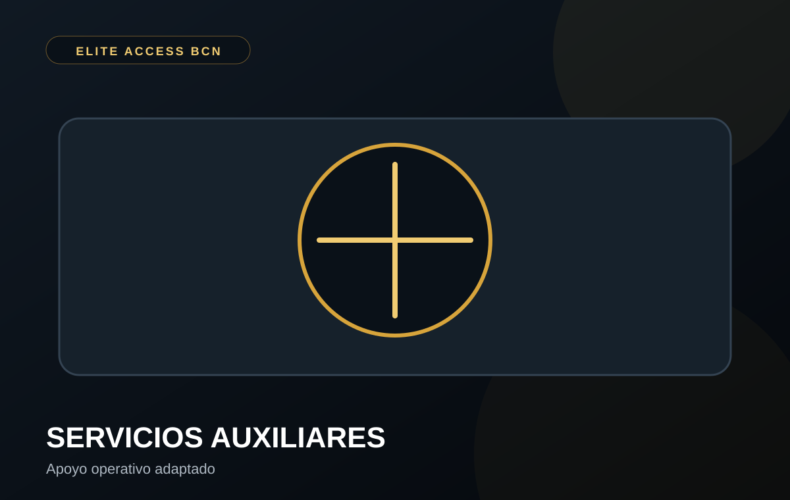
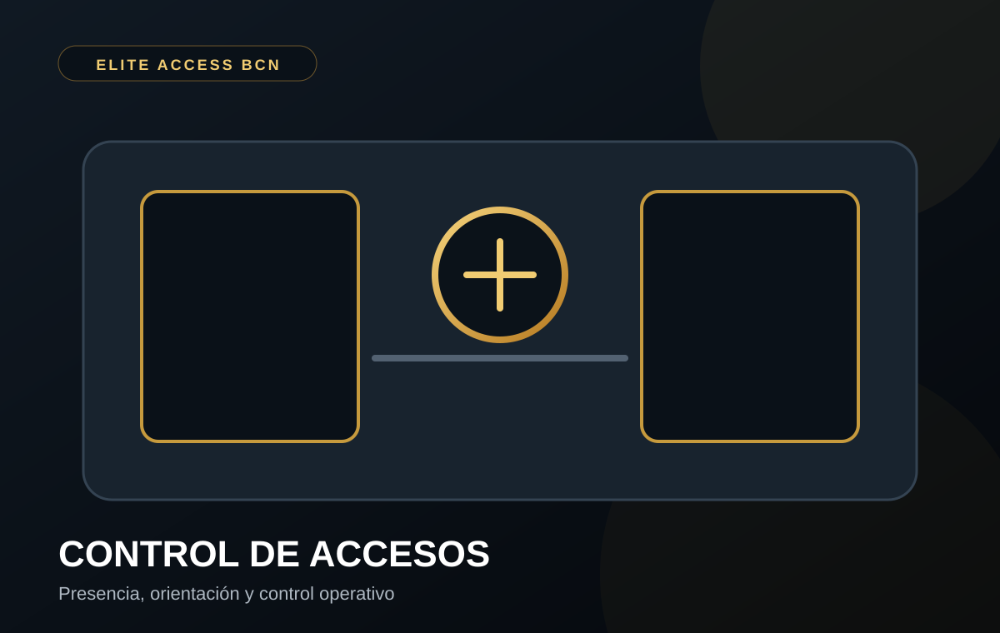
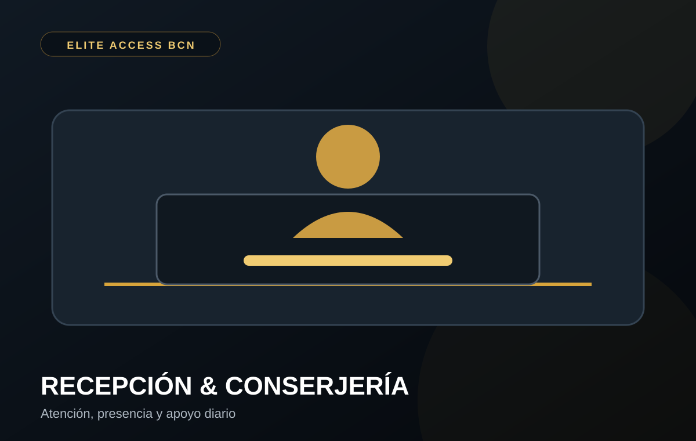
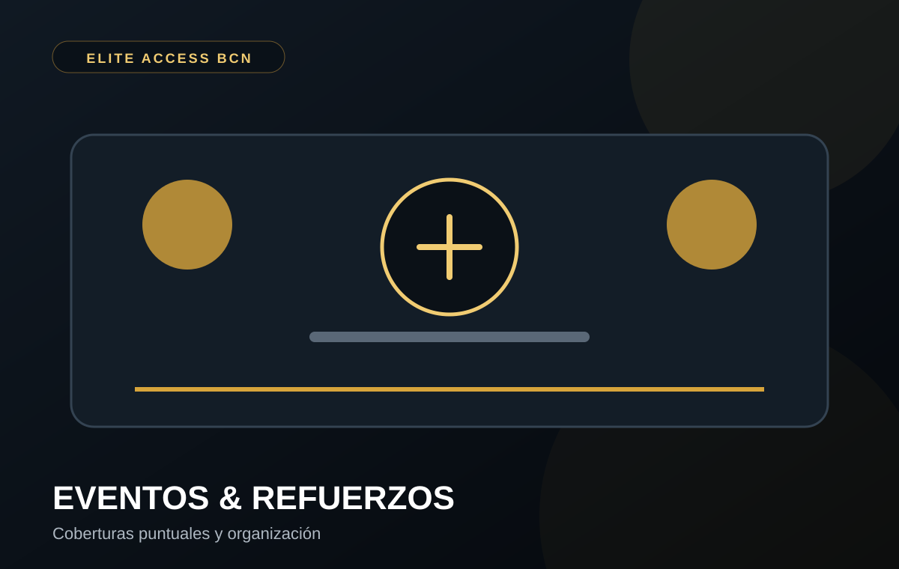

01 · SERVICIOS AUXILIARES
Apoyo operativo
Presencia, información, comprobaciones, orientación y apoyo a la actividad del cliente.
Ver servicioBarcelona · Girona · Lleida · Tarragona
ELITE ACCESS BCN ofrece soluciones auxiliares y operativas diseñadas para que empresas, establecimientos y propietarios trabajen con más orden, presencia y tranquilidad.
Desde la presencia diaria en un establecimiento hasta refuerzos puntuales y coordinación de situaciones inmobiliarias, trabajamos con procedimientos claros y comunicación directa.

Presencia, información, comprobaciones, orientación y apoyo a la actividad del cliente.
Ver servicio
Organización de entradas y salidas cuando la actividad y el personal cumplan los requisitos aplicables.
Ver servicio
Atención, orientación, recepción de visitantes y apoyo al funcionamiento del inmueble.
Ver servicio
Coberturas especiales, campañas, picos de actividad y apoyo auxiliar planificado.
Ver servicio
Coordinación profesional ante ocupaciones, siempre por vías legales y con los profesionales que correspondan.
Ver servicioNuestro enfoque combina presencia, organización y seguimiento. El objetivo es sencillo: que el cliente sepa qué se hace, quién lo hace y cómo se coordina.
Analizamos → proponemos → implantamos → seguimos.
Conocer nuestro métodoELITE ACCESS BCN no presenta como “seguridad privada” aquello que legalmente corresponda a una empresa y personal habilitado de seguridad. En materia de recuperación de inmuebles, no realizamos coacciones, amenazas, intimidación, cortes de suministros ni entradas no autorizadas. Las actuaciones se coordinan por vías legales.